Last updated: 2020-02-20
Checks: 7 0
Knit directory: Fiber_Intervention_Study/
This reproducible R Markdown analysis was created with workflowr (version 1.5.0). The Checks tab describes the reproducibility checks that were applied when the results were created. The Past versions tab lists the development history.
Great! Since the R Markdown file has been committed to the Git repository, you know the exact version of the code that produced these results.
Great job! The global environment was empty. Objects defined in the global environment can affect the analysis in your R Markdown file in unknown ways. For reproduciblity it’s best to always run the code in an empty environment.
The command set.seed(20191210) was run prior to running the code in the R Markdown file. Setting a seed ensures that any results that rely on randomness, e.g. subsampling or permutations, are reproducible.
Great job! Recording the operating system, R version, and package versions is critical for reproducibility.
Nice! There were no cached chunks for this analysis, so you can be confident that you successfully produced the results during this run.
Great job! Using relative paths to the files within your workflowr project makes it easier to run your code on other machines.
Great! You are using Git for version control. Tracking code development and connecting the code version to the results is critical for reproducibility. The version displayed above was the version of the Git repository at the time these results were generated.
Note that you need to be careful to ensure that all relevant files for the analysis have been committed to Git prior to generating the results (you can use wflow_publish or wflow_git_commit). workflowr only checks the R Markdown file, but you know if there are other scripts or data files that it depends on. Below is the status of the Git repository when the results were generated:
Ignored files:
Ignored: .Rhistory
Ignored: .Rproj.user/
Untracked files:
Untracked: data/Microbiome Data/NoahFolder/ASA24_fiber_F_V_intake_by_week.xlsx
Untracked: data/Microbiome Data/NoahFolder/FFQ_HEI_Fiber.xlsx
Untracked: fig/predicted_Actinobacteria.png
Untracked: fig/predicted_Bacteroidetes.png
Untracked: fig/predicted_Cyanobacteria.png
Untracked: fig/predicted_Euryarchaeota.png
Untracked: fig/predicted_Firmicutes.png
Untracked: fig/predicted_Fusobacteria.png
Untracked: fig/predicted_Lentisphaerae.png
Untracked: fig/predicted_Proteobacteria.png
Untracked: fig/predicted_Tenericutes.png
Untracked: fig/predicted_Verrucomicrobia.png
Note that any generated files, e.g. HTML, png, CSS, etc., are not included in this status report because it is ok for generated content to have uncommitted changes.
There are no past versions. Publish this analysis with wflow_publish() to start tracking its development.
This page contains the investigation of the changes in alpha diversity metrics (Observed and Shannon) over time.
Here, we investigated how the metrics of alpha diversity changed over time.
ICC <- function(x){
icc <- VarCorr(x)[[1]]/(VarCorr(x)[[1]] + sigma(x)**2)
icc <- lapply(icc, function(x) { attributes(x) <- NULL; x })
icc <- icc[[1]]
return(icc)
}
mydata <- microbiome_data$meta.dat %>%
mutate(intB = ifelse(Intervention=="B", 1,0),
time = as.numeric(Week) - 1,
female = ifelse(Gender == "F", 1, 0),
hispanic = ifelse(Ethnicity %in% c("White", "Asian", "Native America"), 1, 0))
# lmer - for alpha metrics
# unconditional model
fit <- lmer(Observed ~ 1 + (1 | SubjectID),
data = mydata)
summary(fit)Linear mixed model fit by REML. t-tests use Satterthwaite's method [
lmerModLmerTest]
Formula: Observed ~ 1 + (1 | SubjectID)
Data: mydata
REML criterion at convergence: 276.8
Scaled residuals:
Min 1Q Median 3Q Max
-2.8526 -0.4025 0.1403 0.4613 2.4743
Random effects:
Groups Name Variance Std.Dev.
SubjectID (Intercept) 343.28 18.528
Residual 48.25 6.946
Number of obs: 37, groups: SubjectID, 11
Fixed effects:
Estimate Std. Error df t value Pr(>|t|)
(Intercept) 80.859 5.722 10.126 14.13 5.4e-08 ***
---
Signif. codes: 0 '***' 0.001 '**' 0.01 '*' 0.05 '.' 0.1 ' ' 1plot(fit)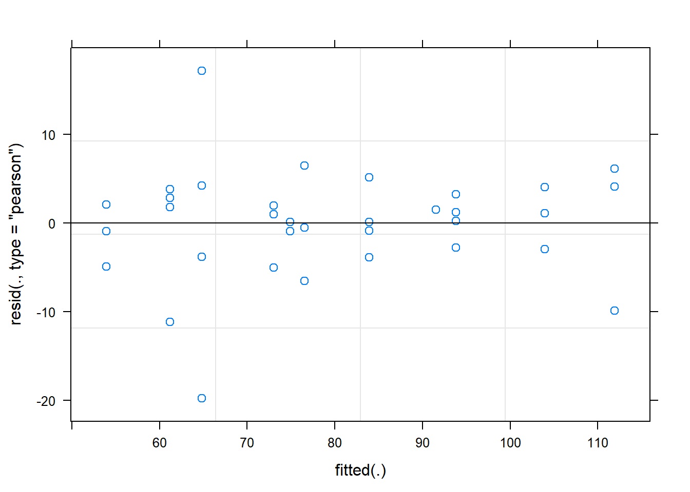
ICC(fit)[1] 0.8767751fit <- lmer(Observed ~ 1 + time + (1 | SubjectID),
data = mydata)
summary(fit)Linear mixed model fit by REML. t-tests use Satterthwaite's method [
lmerModLmerTest]
Formula: Observed ~ 1 + time + (1 | SubjectID)
Data: mydata
REML criterion at convergence: 274.4
Scaled residuals:
Min 1Q Median 3Q Max
-2.8765 -0.3031 0.1047 0.4305 2.4975
Random effects:
Groups Name Variance Std.Dev.
SubjectID (Intercept) 343.95 18.546
Residual 49.22 7.016
Number of obs: 37, groups: SubjectID, 11
Fixed effects:
Estimate Std. Error df t value Pr(>|t|)
(Intercept) 79.9744 5.8781 11.1992 13.606 2.59e-08 ***
time 0.7044 1.0440 25.4952 0.675 0.506
---
Signif. codes: 0 '***' 0.001 '**' 0.01 '*' 0.05 '.' 0.1 ' ' 1
Correlation of Fixed Effects:
(Intr)
time -0.223plot(fit)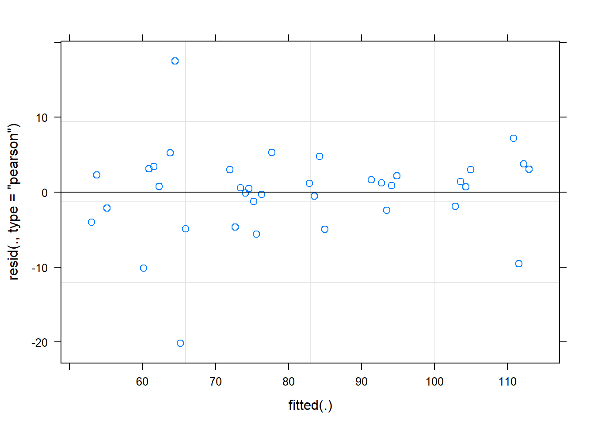
# plot
dat <- cbind(mydata, fit=predict(fit))
ggplot(dat, aes(time, Observed, group=SubjectID))+
geom_line(aes(y=fit))+
geom_point(alpha=0.5)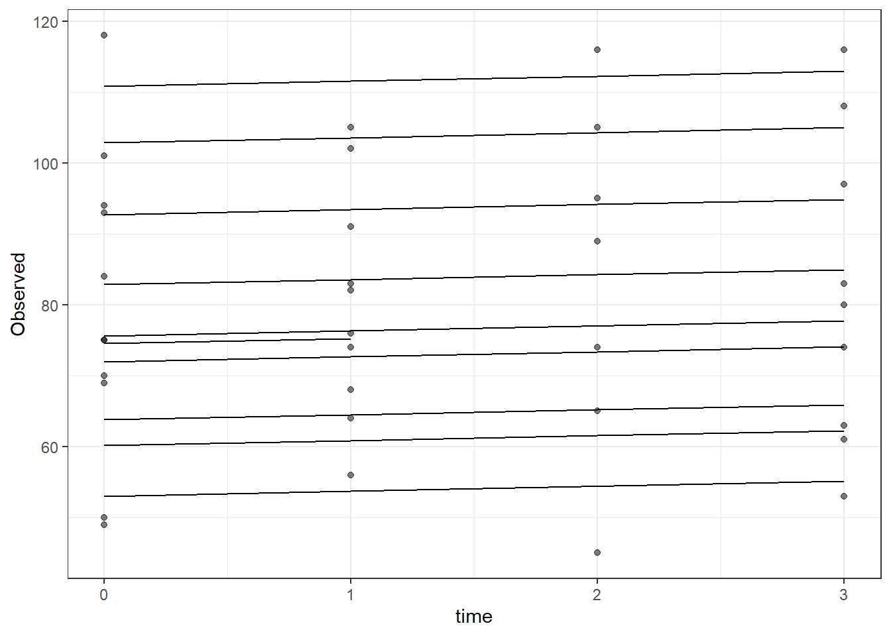
fit <- lmer(Observed ~ 1 + time + (1 + time || SubjectID),
data = mydata)
summary(fit)Linear mixed model fit by REML. t-tests use Satterthwaite's method [
lmerModLmerTest]
Formula: Observed ~ 1 + time + (1 + time || SubjectID)
Data: mydata
REML criterion at convergence: 274.4
Scaled residuals:
Min 1Q Median 3Q Max
-2.8761 -0.3024 0.1030 0.4303 2.4973
Random effects:
Groups Name Variance Std.Dev.
SubjectID (Intercept) 343.93536 18.5455
SubjectID.1 time 0.03332 0.1825
Residual 49.17013 7.0121
Number of obs: 37, groups: SubjectID, 11
Fixed effects:
Estimate Std. Error df t value Pr(>|t|)
(Intercept) 79.9745 5.8777 10.8967 13.606 3.51e-08 ***
time 0.7044 1.0451 9.6234 0.674 0.516
---
Signif. codes: 0 '***' 0.001 '**' 0.01 '*' 0.05 '.' 0.1 ' ' 1
Correlation of Fixed Effects:
(Intr)
time -0.222ranova(fit) # can take out random effect timeANOVA-like table for random-effects: Single term deletions
Model:
Observed ~ time + (1 | SubjectID) + (0 + time | SubjectID)
npar logLik AIC LRT Df Pr(>Chisq)
<none> 5 -137.22 284.44
(1 | SubjectID) 4 -153.74 315.47 33.035 1 9.05e-09 ***
time in (0 + time | SubjectID) 4 -137.22 282.44 0.000 1 0.9965
---
Signif. codes: 0 '***' 0.001 '**' 0.01 '*' 0.05 '.' 0.1 ' ' 1plot(fit)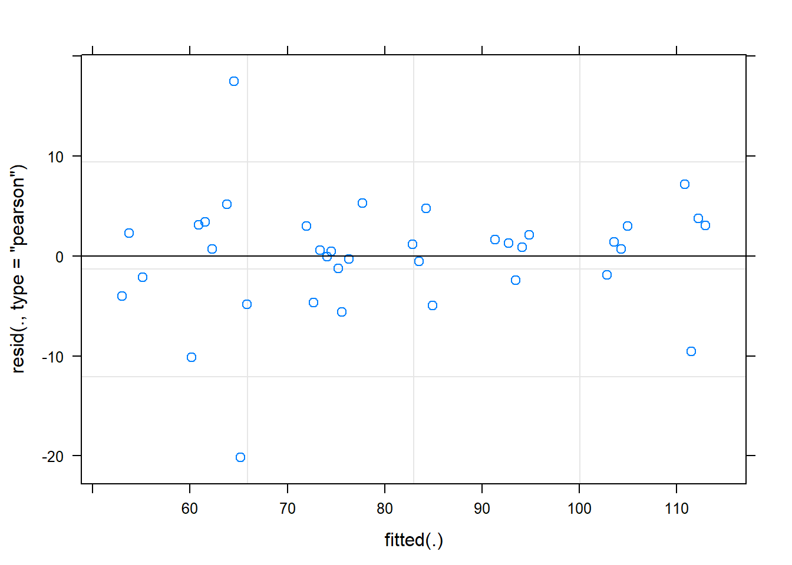
dat <- cbind(mydata, fit=predict(fit))
ggplot(dat, aes(time, Observed, group=SubjectID))+
geom_line(aes(y=fit))+
geom_point(alpha=0.5)#+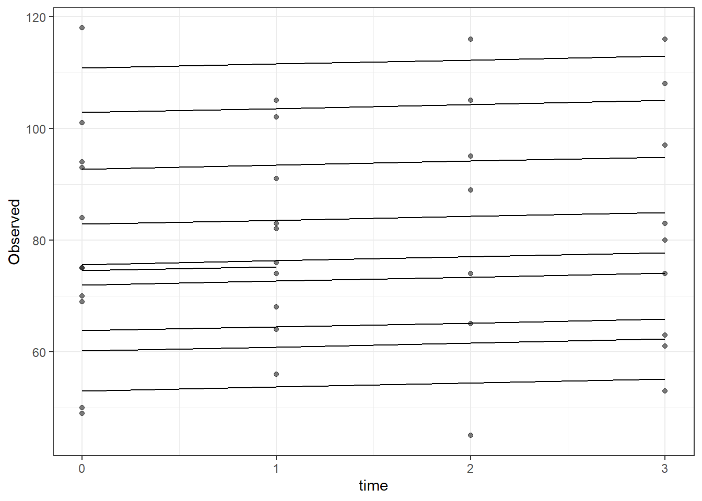
#geom_abline(intercept = fixef(fit)[1], slope=fixef(fit)[2],
#linetype="dashed", size=1.5)Time is only a fixed effect.
fit <- lmer(Observed ~ 1 + time + female + hispanic + (1 | SubjectID),
data = mydata)
summary(fit)Linear mixed model fit by REML. t-tests use Satterthwaite's method [
lmerModLmerTest]
Formula: Observed ~ 1 + time + female + hispanic + (1 | SubjectID)
Data: mydata
REML criterion at convergence: 260.1
Scaled residuals:
Min 1Q Median 3Q Max
-2.8378 -0.2979 0.1045 0.3988 2.5353
Random effects:
Groups Name Variance Std.Dev.
SubjectID (Intercept) 404.90 20.122
Residual 49.24 7.017
Number of obs: 37, groups: SubjectID, 11
Fixed effects:
Estimate Std. Error df t value Pr(>|t|)
(Intercept) 73.7523 12.2582 8.2396 6.017 0.000283 ***
time 0.7036 1.0451 25.3935 0.673 0.506875
female 9.4770 13.1744 8.0765 0.719 0.492215
hispanic 0.3278 13.1588 8.0383 0.025 0.980733
---
Signif. codes: 0 '***' 0.001 '**' 0.01 '*' 0.05 '.' 0.1 ' ' 1
Correlation of Fixed Effects:
(Intr) time female
time -0.118
female -0.537 -0.011
hispanic -0.537 0.028 -0.213ranova(fit)ANOVA-like table for random-effects: Single term deletions
Model:
Observed ~ time + female + hispanic + (1 | SubjectID)
npar logLik AIC LRT Df Pr(>Chisq)
<none> 6 -130.03 272.06
(1 | SubjectID) 5 -151.64 313.28 43.216 1 4.902e-11 ***
---
Signif. codes: 0 '***' 0.001 '**' 0.01 '*' 0.05 '.' 0.1 ' ' 1plot(fit)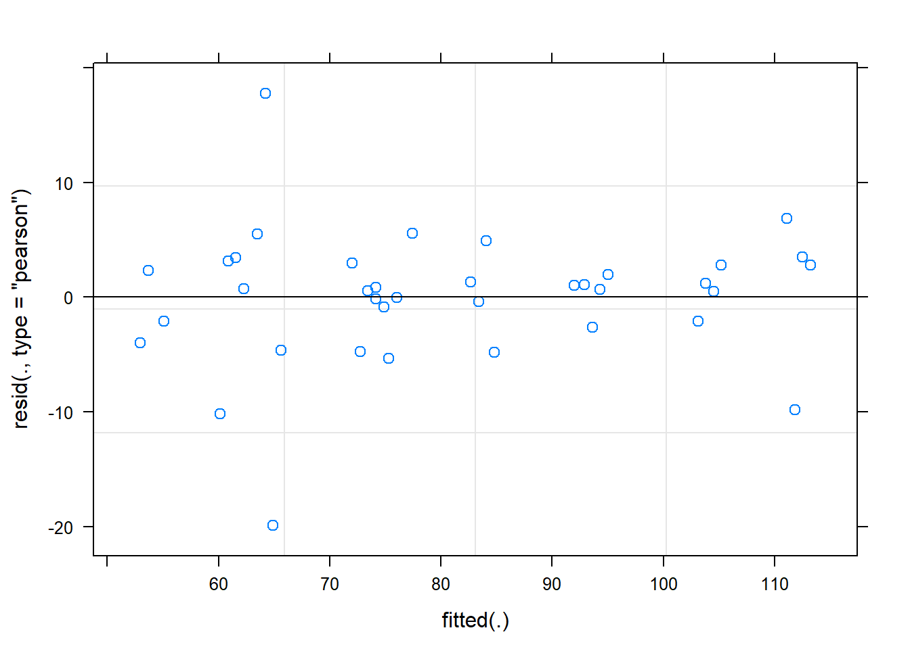
ICC(fit)[1] 0.8915758dat <- cbind(mydata, fit=predict(fit))
ggplot(dat, aes(time, Observed, group=SubjectID, color=Gender))+
geom_line(aes(y=fit))+
geom_point(alpha=0.5)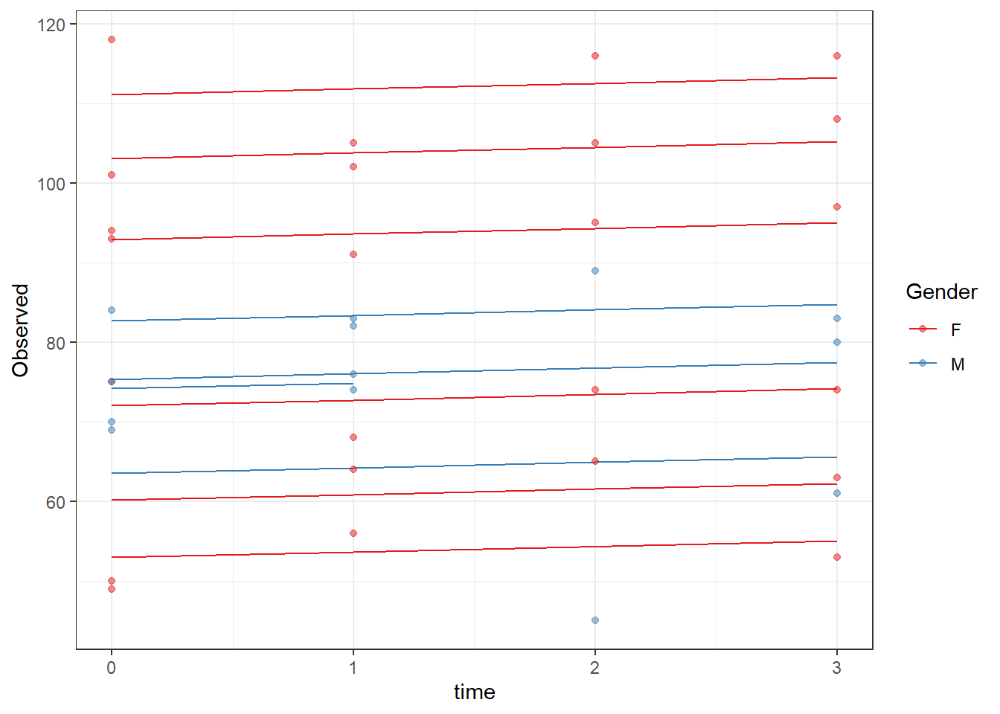
fit <- lmer(Observed ~ 1 + intB + female + hispanic + (1 | SubjectID),
data = mydata)
summary(fit)Linear mixed model fit by REML. t-tests use Satterthwaite's method [
lmerModLmerTest]
Formula: Observed ~ 1 + intB + female + hispanic + (1 | SubjectID)
Data: mydata
REML criterion at convergence: 255.3
Scaled residuals:
Min 1Q Median 3Q Max
-2.8214 -0.4218 0.1150 0.4418 2.5037
Random effects:
Groups Name Variance Std.Dev.
SubjectID (Intercept) 455.39 21.340
Residual 48.28 6.948
Number of obs: 37, groups: SubjectID, 11
Fixed effects:
Estimate Std. Error df t value Pr(>|t|)
(Intercept) 73.151 13.678 7.089 5.348 0.00102 **
intB 4.797 14.012 7.130 0.342 0.74198
female 10.329 14.106 7.115 0.732 0.48746
hispanic -1.607 14.767 7.046 -0.109 0.91639
---
Signif. codes: 0 '***' 0.001 '**' 0.01 '*' 0.05 '.' 0.1 ' ' 1
Correlation of Fixed Effects:
(Intr) intB female
intB -0.337
female -0.557 0.155
hispanic -0.365 -0.334 -0.250ranova(fit)ANOVA-like table for random-effects: Single term deletions
Model:
Observed ~ intB + female + hispanic + (1 | SubjectID)
npar logLik AIC LRT Df Pr(>Chisq)
<none> 6 -127.63 267.25
(1 | SubjectID) 5 -150.68 311.35 46.1 1 1.124e-11 ***
---
Signif. codes: 0 '***' 0.001 '**' 0.01 '*' 0.05 '.' 0.1 ' ' 1plot(fit)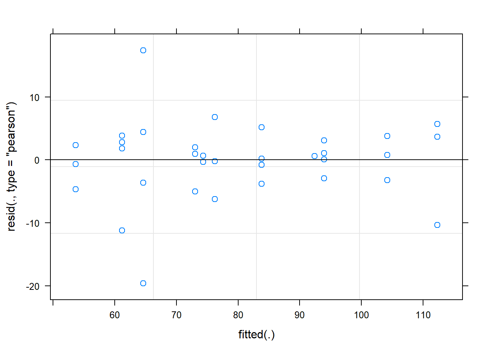
ICC(fit)[1] 0.9041487dat <- cbind(mydata, fit=predict(fit))
ggplot(dat, aes(time, Observed, group=SubjectID, color=Intervention))+
geom_line(aes(y=fit))+
geom_point(alpha=0.5)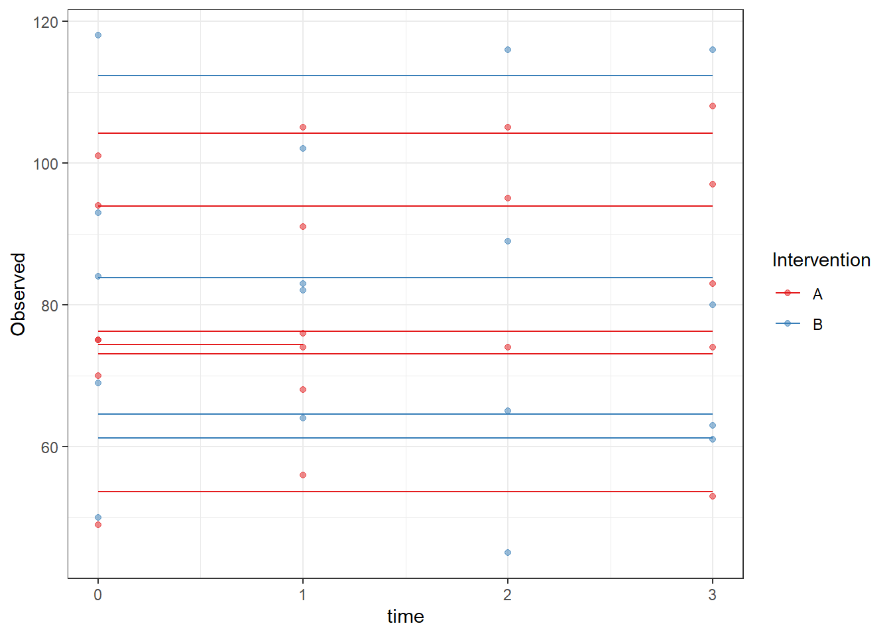
# lmer - for alpha metrics
# unconditional model
fit <- lmer(Shannon ~ 1 + (1 | SubjectID),
data = mydata)
summary(fit)Linear mixed model fit by REML. t-tests use Satterthwaite's method [
lmerModLmerTest]
Formula: Shannon ~ 1 + (1 | SubjectID)
Data: mydata
REML criterion at convergence: 27.5
Scaled residuals:
Min 1Q Median 3Q Max
-2.52108 -0.10901 0.09227 0.42858 2.24145
Random effects:
Groups Name Variance Std.Dev.
SubjectID (Intercept) 0.20910 0.4573
Residual 0.05614 0.2369
Number of obs: 37, groups: SubjectID, 11
Fixed effects:
Estimate Std. Error df t value Pr(>|t|)
(Intercept) 2.5369 0.1441 10.0567 17.6 6.93e-09 ***
---
Signif. codes: 0 '***' 0.001 '**' 0.01 '*' 0.05 '.' 0.1 ' ' 1plot(fit)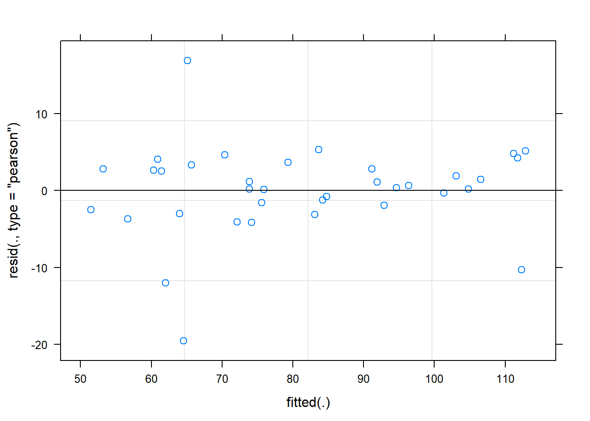
ICC(fit)[1] 0.7883436fit <- lmer(Shannon ~ 1 + time + (1 | SubjectID),
data = mydata)
summary(fit)Linear mixed model fit by REML. t-tests use Satterthwaite's method [
lmerModLmerTest]
Formula: Shannon ~ 1 + time + (1 | SubjectID)
Data: mydata
REML criterion at convergence: 31.8
Scaled residuals:
Min 1Q Median 3Q Max
-2.56270 -0.23068 0.06454 0.43411 2.28067
Random effects:
Groups Name Variance Std.Dev.
SubjectID (Intercept) 0.21095 0.4593
Residual 0.05688 0.2385
Number of obs: 37, groups: SubjectID, 11
Fixed effects:
Estimate Std. Error df t value Pr(>|t|)
(Intercept) 2.50312 0.15156 12.01774 16.516 1.26e-09 ***
time 0.02671 0.03539 25.67099 0.755 0.457
---
Signif. codes: 0 '***' 0.001 '**' 0.01 '*' 0.05 '.' 0.1 ' ' 1
Correlation of Fixed Effects:
(Intr)
time -0.295plot(fit)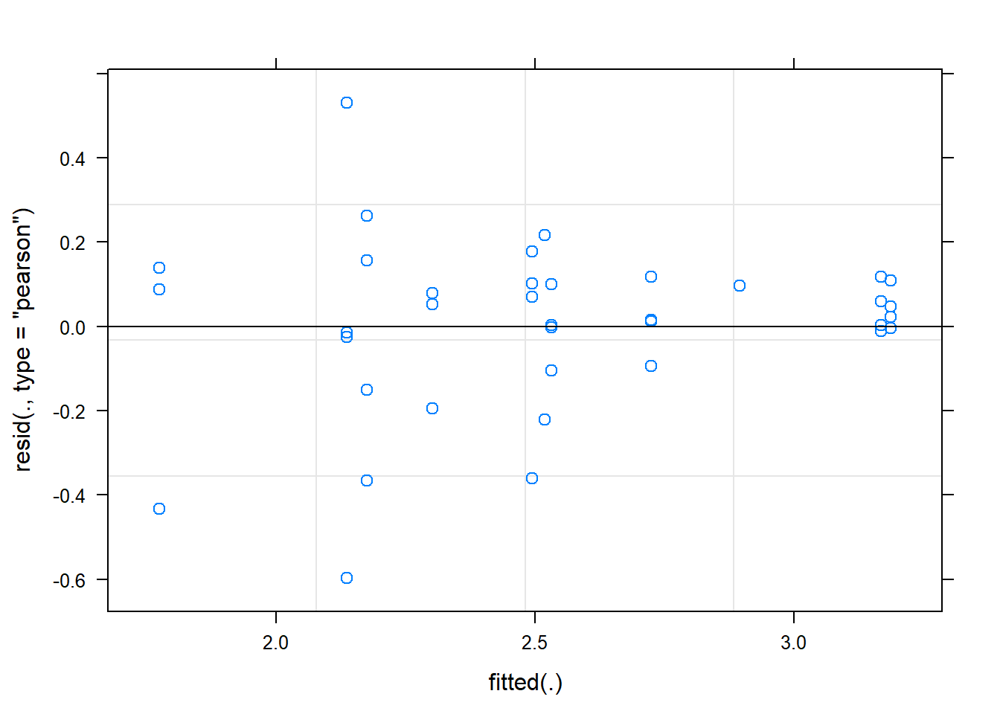
# plot
dat <- cbind(mydata, fit=predict(fit))
ggplot(dat, aes(time, Shannon, group=SubjectID))+
geom_line(aes(y=fit))+
geom_point(alpha=0.5)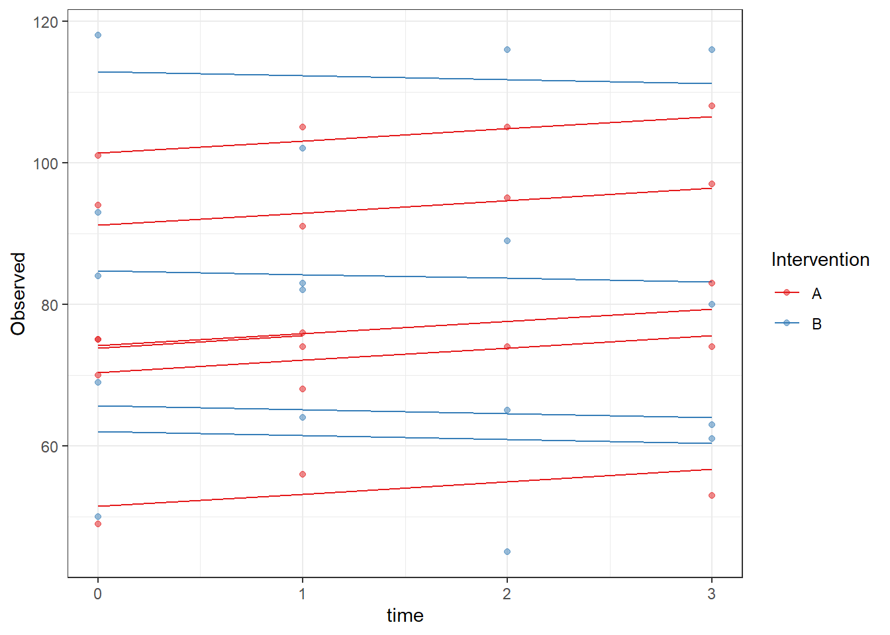
fit <- lmer(Shannon ~ 1 + time + (1 + time || SubjectID),
data = mydata)boundary (singular) fit: see ?isSingularsummary(fit)Linear mixed model fit by REML. t-tests use Satterthwaite's method [
lmerModLmerTest]
Formula: Shannon ~ 1 + time + (1 + time || SubjectID)
Data: mydata
REML criterion at convergence: 31.8
Scaled residuals:
Min 1Q Median 3Q Max
-2.56270 -0.23068 0.06454 0.43411 2.28067
Random effects:
Groups Name Variance Std.Dev.
SubjectID (Intercept) 0.21095 0.4593
SubjectID.1 time 0.00000 0.0000
Residual 0.05688 0.2385
Number of obs: 37, groups: SubjectID, 11
Fixed effects:
Estimate Std. Error df t value Pr(>|t|)
(Intercept) 2.50312 0.15156 12.01773 16.516 1.26e-09 ***
time 0.02671 0.03539 25.67099 0.755 0.457
---
Signif. codes: 0 '***' 0.001 '**' 0.01 '*' 0.05 '.' 0.1 ' ' 1
Correlation of Fixed Effects:
(Intr)
time -0.295
convergence code: 0
boundary (singular) fit: see ?isSingularranova(fit) # can take out random effect timeANOVA-like table for random-effects: Single term deletions
Model:
Shannon ~ time + (1 | SubjectID) + (0 + time | SubjectID)
npar logLik AIC LRT Df Pr(>Chisq)
<none> 5 -15.904 41.808
(1 | SubjectID) 4 -28.136 64.272 24.464 1 7.573e-07 ***
time in (0 + time | SubjectID) 4 -15.904 39.808 0.000 1 1
---
Signif. codes: 0 '***' 0.001 '**' 0.01 '*' 0.05 '.' 0.1 ' ' 1plot(fit)dat <- cbind(mydata, fit=predict(fit))
ggplot(dat, aes(time, Shannon, group=SubjectID))+
geom_line(aes(y=fit))+
geom_point(alpha=0.5)#+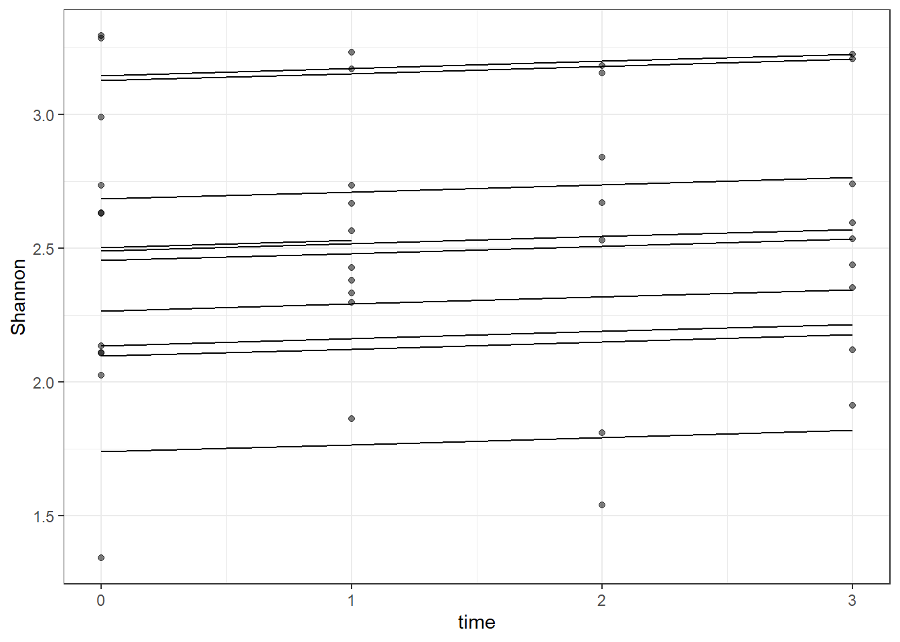
#geom_abline(intercept = fixef(fit)[1], slope=fixef(fit)[2],
#linetype="dashed", size=1.5)Time is only a fixed effect.
fit <- lmer(Shannon ~ 1 + time + female + hispanic + (1 | SubjectID),
data = mydata)
summary(fit)Linear mixed model fit by REML. t-tests use Satterthwaite's method [
lmerModLmerTest]
Formula: Shannon ~ 1 + time + female + hispanic + (1 | SubjectID)
Data: mydata
REML criterion at convergence: 32.3
Scaled residuals:
Min 1Q Median 3Q Max
-2.52044 -0.19196 0.07653 0.43541 2.32382
Random effects:
Groups Name Variance Std.Dev.
SubjectID (Intercept) 0.25601 0.5060
Residual 0.05687 0.2385
Number of obs: 37, groups: SubjectID, 11
Fixed effects:
Estimate Std. Error df t value Pr(>|t|)
(Intercept) 2.39623 0.31436 8.28622 7.623 5.11e-05 ***
time 0.02675 0.03545 25.53005 0.755 0.457
female 0.20648 0.33656 7.99579 0.613 0.557
hispanic -0.03743 0.33585 7.92920 -0.111 0.914
---
Signif. codes: 0 '***' 0.001 '**' 0.01 '*' 0.05 '.' 0.1 ' ' 1
Correlation of Fixed Effects:
(Intr) time female
time -0.156
female -0.535 -0.015
hispanic -0.535 0.036 -0.212ranova(fit)ANOVA-like table for random-effects: Single term deletions
Model:
Shannon ~ time + female + hispanic + (1 | SubjectID)
npar logLik AIC LRT Df Pr(>Chisq)
<none> 6 -16.157 44.313
(1 | SubjectID) 5 -30.816 71.632 29.319 1 6.138e-08 ***
---
Signif. codes: 0 '***' 0.001 '**' 0.01 '*' 0.05 '.' 0.1 ' ' 1plot(fit)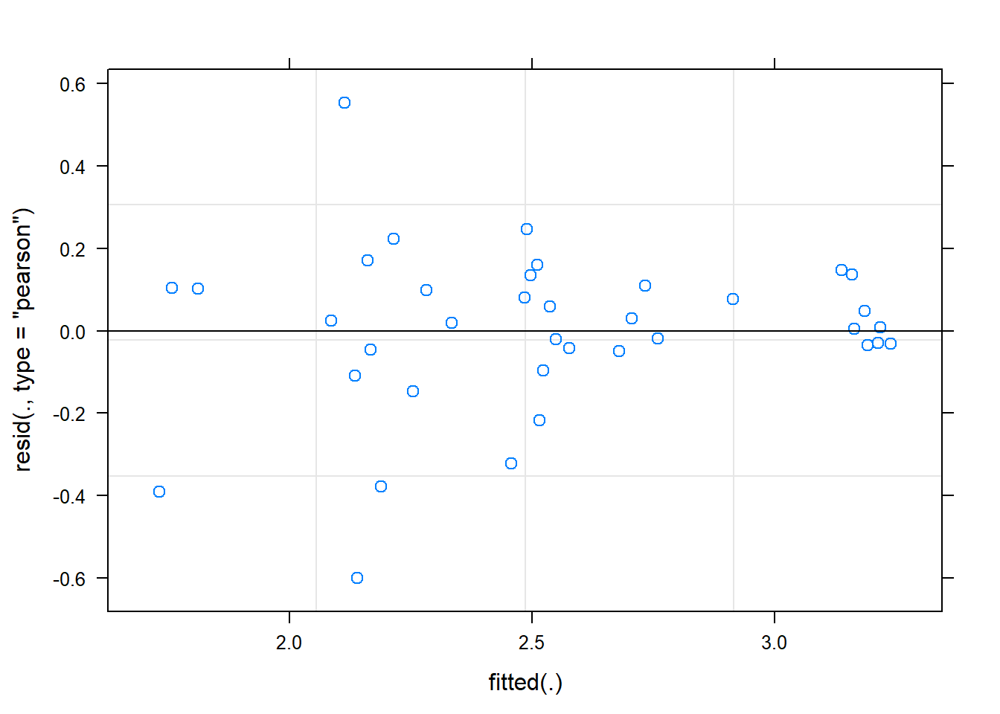
ICC(fit)[1] 0.8182491dat <- cbind(mydata, fit=predict(fit))
ggplot(dat, aes(time, Shannon, group=SubjectID, color=Gender))+
geom_line(aes(y=fit))+
geom_point(alpha=0.5)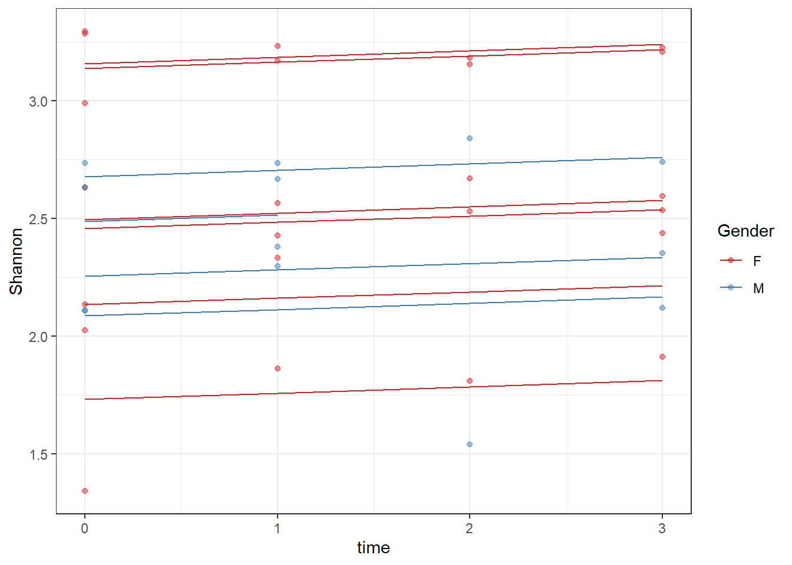
fit <- lmer(Shannon ~ 1 + intB + time + female + (1 | SubjectID),
data = mydata)
summary(fit)Linear mixed model fit by REML. t-tests use Satterthwaite's method [
lmerModLmerTest]
Formula: Shannon ~ 1 + intB + time + female + (1 | SubjectID)
Data: mydata
REML criterion at convergence: 32.1
Scaled residuals:
Min 1Q Median 3Q Max
-2.5421 -0.2129 0.0820 0.4446 2.3060
Random effects:
Groups Name Variance Std.Dev.
SubjectID (Intercept) 0.24560 0.4956
Residual 0.05679 0.2383
Number of obs: 37, groups: SubjectID, 11
Fixed effects:
Estimate Std. Error df t value Pr(>|t|)
(Intercept) 2.28187 0.30569 8.58746 7.465 4.93e-05 ***
intB 0.18778 0.31332 8.16494 0.599 0.565
time 0.02692 0.03539 25.65615 0.761 0.454
female 0.21545 0.32387 8.13434 0.665 0.524
---
Signif. codes: 0 '***' 0.001 '**' 0.01 '*' 0.05 '.' 0.1 ' ' 1
Correlation of Fixed Effects:
(Intr) intB time
intB -0.522
time -0.143 0.005
female -0.713 0.088 -0.007ranova(fit)ANOVA-like table for random-effects: Single term deletions
Model:
Shannon ~ intB + time + female + (1 | SubjectID)
npar logLik AIC LRT Df Pr(>Chisq)
<none> 6 -16.037 44.073
(1 | SubjectID) 5 -30.640 71.280 29.207 1 6.503e-08 ***
---
Signif. codes: 0 '***' 0.001 '**' 0.01 '*' 0.05 '.' 0.1 ' ' 1plot(fit)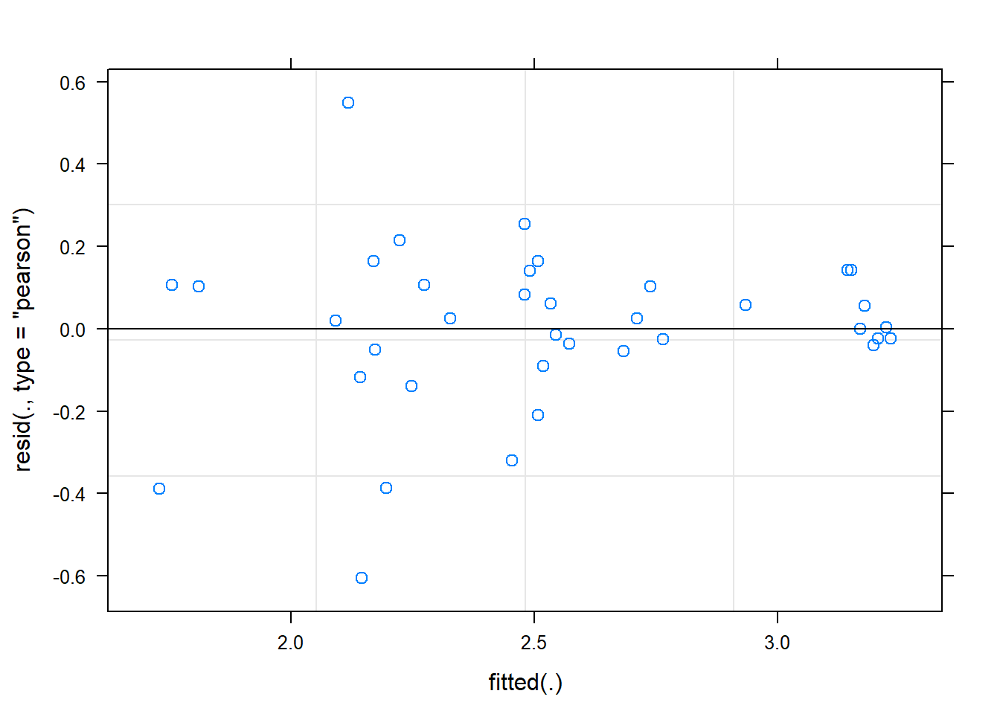
ICC(fit)[1] 0.8121915dat <- cbind(mydata, fit=predict(fit))
ggplot(dat, aes(time, Shannon, group=SubjectID, color=Intervention))+
geom_line(aes(y=fit))+
geom_point(alpha=0.5)
sessionInfo()R version 3.6.1 (2019-07-05)
Platform: x86_64-w64-mingw32/x64 (64-bit)
Running under: Windows 10 x64 (build 18362)
Matrix products: default
locale:
[1] LC_COLLATE=English_United States.1252
[2] LC_CTYPE=English_United States.1252
[3] LC_MONETARY=English_United States.1252
[4] LC_NUMERIC=C
[5] LC_TIME=English_United States.1252
attached base packages:
[1] stats graphics grDevices utils datasets methods base
other attached packages:
[1] gridExtra_2.3 xtable_1.8-4 kableExtra_1.1.0 plyr_1.8.4
[5] data.table_1.12.6 readxl_1.3.1 forcats_0.4.0 stringr_1.4.0
[9] dplyr_0.8.3 purrr_0.3.3 readr_1.3.1 tidyr_1.0.0
[13] tibble_2.1.3 ggplot2_3.2.1 tidyverse_1.3.0 lmerTest_3.1-1
[17] lme4_1.1-21 Matrix_1.2-17 phyloseq_1.30.0
loaded via a namespace (and not attached):
[1] nlme_3.1-140 fs_1.3.1 lubridate_1.7.4
[4] RColorBrewer_1.1-2 webshot_0.5.2 httr_1.4.1
[7] rprojroot_1.3-2 numDeriv_2016.8-1.1 tools_3.6.1
[10] backports_1.1.5 R6_2.4.1 vegan_2.5-6
[13] DBI_1.0.0 lazyeval_0.2.2 BiocGenerics_0.32.0
[16] mgcv_1.8-28 colorspace_1.4-1 permute_0.9-5
[19] ade4_1.7-13 withr_2.1.2 tidyselect_0.2.5
[22] compiler_3.6.1 git2r_0.26.1 cli_1.1.0
[25] rvest_0.3.5 Biobase_2.46.0 xml2_1.2.2
[28] labeling_0.3 scales_1.1.0 digest_0.6.23
[31] minqa_1.2.4 rmarkdown_1.18 XVector_0.26.0
[34] pkgconfig_2.0.3 htmltools_0.4.0 dbplyr_1.4.2
[37] rlang_0.4.2 rstudioapi_0.10 farver_2.0.1
[40] generics_0.0.2 jsonlite_1.6 magrittr_1.5
[43] biomformat_1.14.0 Rcpp_1.0.3 munsell_0.5.0
[46] S4Vectors_0.24.1 Rhdf5lib_1.8.0 ape_5.3
[49] lifecycle_0.1.0 stringi_1.4.3 yaml_2.2.0
[52] MASS_7.3-51.4 zlibbioc_1.32.0 rhdf5_2.30.1
[55] grid_3.6.1 parallel_3.6.1 promises_1.1.0
[58] crayon_1.3.4 lattice_0.20-38 Biostrings_2.54.0
[61] haven_2.2.0 splines_3.6.1 multtest_2.42.0
[64] hms_0.5.2 zeallot_0.1.0 knitr_1.26
[67] pillar_1.4.2 igraph_1.2.4.2 boot_1.3-22
[70] reshape2_1.4.3 codetools_0.2-16 stats4_3.6.1
[73] reprex_0.3.0 glue_1.3.1 evaluate_0.14
[76] modelr_0.1.5 vctrs_0.2.0 nloptr_1.2.1
[79] httpuv_1.5.2 foreach_1.4.7 cellranger_1.1.0
[82] gtable_0.3.0 assertthat_0.2.1 xfun_0.11
[85] broom_0.5.2 later_1.0.0 viridisLite_0.3.0
[88] survival_2.44-1.1 iterators_1.0.12 IRanges_2.20.1
[91] workflowr_1.5.0 cluster_2.1.0